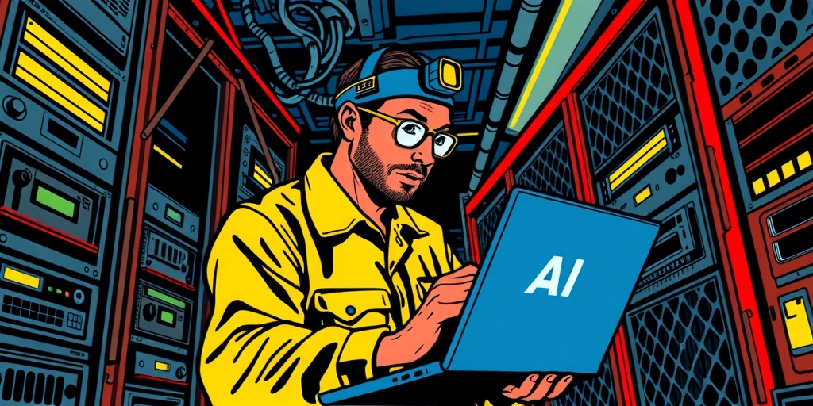
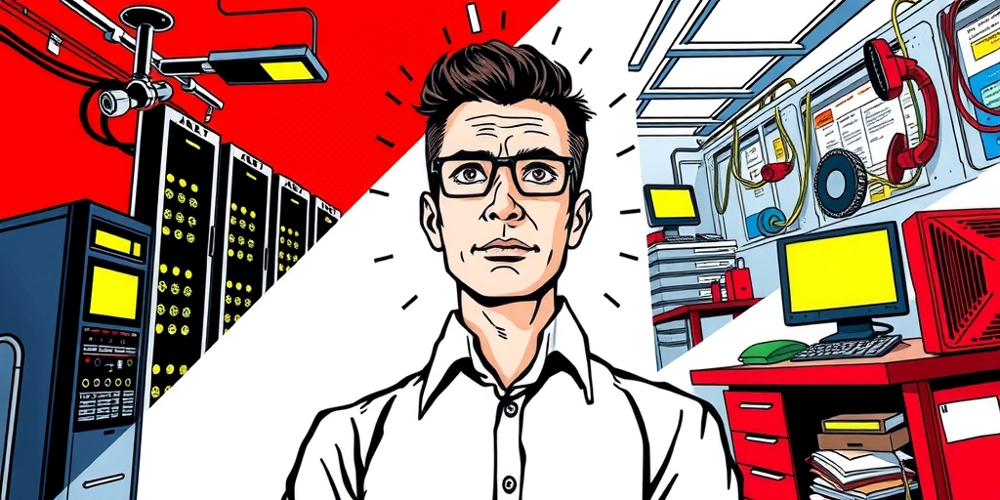
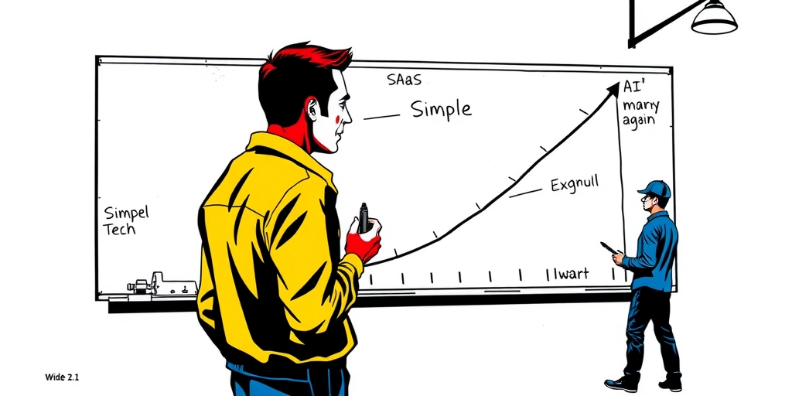
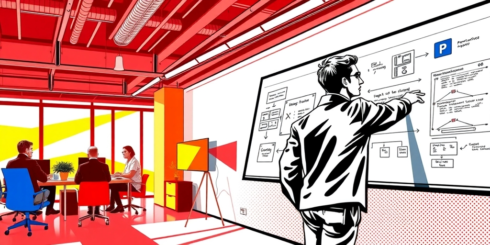

小汪老师的成长洞察 · 属于你的成长专栏
当AI能独立写代码、理解需求、完成端到端交付时，科技行业最抢手的职位不是算法研究员，而是一个听起来像军事术语的角色：FDE。2025到2026年，FDE职位发布量暴涨729%，Salesforce、OpenAI、Anthropic全部加入抢人大战。这个反直觉的现象指向一个被低估的经济学原理——企业AI部署的“最后一公里”不是技术问题，是组织问题。

Palantir在2010年代初创建了一个内部代号“Delta”的职位。名字取自特种部队——把最精锐的工程师直接投送到客户前线。这些人不是销售工程师，不是方案顾问。他们写生产代码，在客户的遗留系统、合规限制、未文档化API中构建真实解决方案。
这个角色后来有了正式名称：Forward Deployed Engineer，前沿部署工程师。十年间它只在国防、情报圈子内流动。但2025年4月到2026年4月，FDE职位发布量增长了729%。Salesforce承诺组建1000人的FDE团队。OpenAI、Anthropic、Databricks、Stripe、Ramp全部跟进。
FDE成了AI时代最火的职位。这很反直觉。AI越强大，部署应该越不需要人才对。一个能自主写代码的模型，为什么反而催生了对“人去现场”的爆炸性需求？答案不在技术层，而在组织层。
FDE在SaaS时代没有大规模扩散。2010到2020年，企业软件的核心是CRM、HR系统、协同工具。这些产品的落地复杂度是可降维的。每个客户的流程和数据结构有差异，但差异可以被标准文档、最佳实践模板和在线支持覆盖。一个优秀的Solution Architect加一个实施伙伴能搞定大多数部署。
AI产品的落地复杂度不可降维。每个客户的数据质量、遗留系统拓扑、合规约束、组织政治、工作流程习惯都是一个独特组合。大语言模型的输出不确定，Agent的行为路径动态变化，集成连接点脆弱。你不可能写一套文档覆盖所有客户的独特情况——每个客户的问题都是一个未曾出现过的工程问题。
Salesforce CEO Marc Benioff用了一个比喻：企业买AI就像你奶奶拿到一部iPhone，她想用，但需要你帮她设置好。a16z的版本更尖锐：企业不是在买一个产品，是在买“让产品在自己的环境中跑起来”这件事——这件事本身就是一个需要工程师来完成的工程项目。

传统SaaS的功能边界明确。CRM就是管理客户关系，HR系统就是跑薪酬和绩效。客户买的时候知道自己买的是什么。AI产品是“你可以用它做什么”而非“它帮你完成某个确定任务”。客户不仅不知道如何部署，甚至不知道应该部署成什么样。
FDE的工作不是帮客户配置产品，而是帮客户发现产品在他们的环境中可以变成什么。这要求FDE兼具三种角色：Startup CTO，从零构建解决方案；现场工程师，在客户的遗留系统、合规限制中作战；技术顾问，帮客户理解自己真正需要什么，而不是他们说自己需要什么。
与传统角色的关键区别：FDE写生产代码且拥有交付结果，全程嵌入客户而非仅在Demo或方案阶段出现，直接向产品路线图贡献反馈而非间接传递。他们上午在写Agent指令和调试prompt，下午在对接客户遗留认证系统，晚上和产品团队基于现场学到的东西规划下一版功能。任何一天的工作内容都无法预测——客户环境中的“意外”就是FDE存在的理由。

技术复杂度与部署人力成本之间的关系不是线性的，而是U型的。在技术简单阶段，部署需要大量咨询顾问——要把一个标准系统适配到千差万别的企业流程中。在技术成熟阶段，部署人力需求下降——产品自我服务能力提高，标准化程度提升。我们本来预期AI会延续这个趋势：技术越强大，越不需要人。
但FDE的爆发证明这条曲线在AI时代拐弯向上了。不是因为AI不够强，恰恰是因为AI的能力边界太宽、行为不确定性太高，导致“理解客户环境+适配产品行为+确保可靠结果”这件事的复杂度飙升。
这是一个“最后一公里”悖论。技术的前999公里由模型能力解决——写代码、理解需求、生成方案。但最后1公里——让方案在客户独特的环境中真正跑起来并产生可靠结果——不仅没有被缩短，反而因为前999公里的复杂度提升而变得更长。当AI生成的东西越强大、越复杂，它出错的模式也越多，客户环境中的“意外”也越多。

FDE的爆发不只是一种新职位的流行，它传递了一个商业模式的信号。我们可能正在从“产品规模化”时代走向“集成规模化”时代。SaaS的核心经济学是“build once, sell many”——一次研发投入，通过标准化交付在千万客户身上摊销。
FDE的存在暗示AI产品暂时无法走这条路。每个客户都需要显著的人力投入才能成功落地。这意味着AI产品公司的成本结构更接近咨询公司而非SaaS公司：收入线性增长，成本也线性增长，规模效应被“每个客户都需要工程师嵌入”的事实侵蚀。
但这不一定是一个坏的商业模式。Palantir证明了这条路可以走得通——它是一家以FDE为核心交付模式的公司，市值超过千亿美元。关键在于：如果FDE在客户现场学到的东西可以回流到产品中，使得后续部署更快、更标准化，那么FDE就不是一个纯粹的成本项，而是一个“用现场知识交换产品进化”的战略投资。这就是为什么FDE必须直接向产品路线图贡献反馈——这不仅是职责描述中的一行字，而是整个商业模式能否从线性成本结构进化到规模效应结构的关键。
Palantir做到这一点的原因之一是它的组织文化：FDE和产品工程师在同一栋楼里工作，FDE从现场回来后直接坐在产品团队旁边——反馈不是通过Jira ticket传递，而是在白板上完成的。招聘FDE的公司如果不建立这种文化基础设施，FDE就只会变成“高级售后工程师”而非“产品进化的传感器”。
写给你的话
FDE的爆发是一面镜子。它照出的不是AI不够强，而是企业环境太乱、太独特、太不可预测。但更深一层的问题很少有人问：那些正在疯狂招聘FDE的公司，真的打算建立让现场知识回流产品的文化基础设施吗？如果FDE带回来的洞察被淹没在工单系统里，如果产品团队从未和FDE坐在同一块白板前，那么FDE只是一个昂贵的战术手段，烧钱换客户满意度的线性游戏。只有把FDE当作产品进化的传感器，这个角色才可能从成本项变成战略引擎。你所在的公司，准备好了吗？
小汪老师的成长洞察 · 属于你的成长专栏